May 11 "Hack Day"
Posted by Catherine Motuz on July 07, 2013
On May 11th, after a successful and well-attended series of talks the afternoon before, the ELVIS team met in the CIRMMT seminar room for a kind of “Hack Day.” This involved getting out our laptops and sitting around the room, each with a set of specific tasks to address that day, alone or in groups, taking advantage of a lively but focused atmosphere and the resources of each others’ presence. For example, having Myke Cuthbert around made it possible to see with certainty which issues in VIS stemmed from the VIS programme itself, and which stemmed from Music21, which runs in conjunction with it, and to fix as many as possible. The presence of both musicologists and programmers in the room made it possible for concerns about music-analysis functionality to be addressed immediately. In some cases, teams were able to consult each other for advice on making queries, such as when Frauke shared her experience of learning to detect ornamented cadences, for instance, and in some cases members of different teams paired up, such as when Kirill and Catherine applied his beat-finding algorithms to two versions of a piece by Hofhaimer, one encoded at original and the other at 1/4 reduced note values.
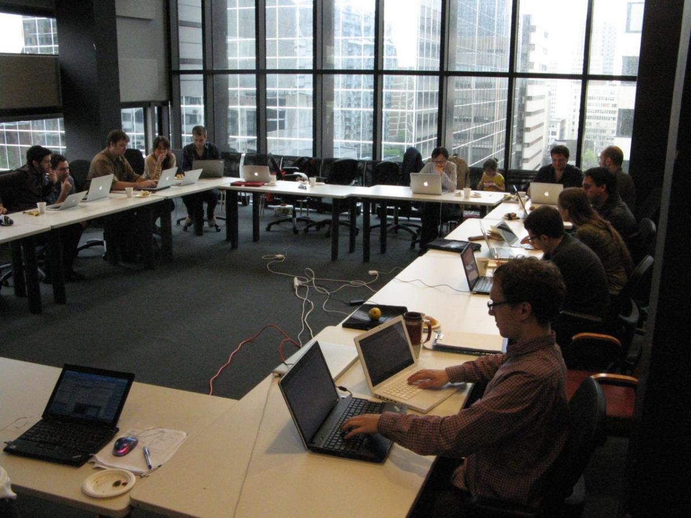
Among the many queries problems addressed on this day were VIS/Music21 functionality, developing an improved database, queries for Julie and Peter’s upcoming Lassus duets paper, queries for Alex Morgan’s Tinctoris project, preparing the release of a new version of Music21, condensing arpeggiated piano music to harmonic sequences, finding and “real” vs. “apparent” triads and the motions between them (especially third motions), analysing issues of cadences on multiple metrical levels, looking at new sources of repertoire, looking for probability of harmonic events to find downbeats, and generally playing with the new, improved version of VIS.
Here are some pictures from the day:
 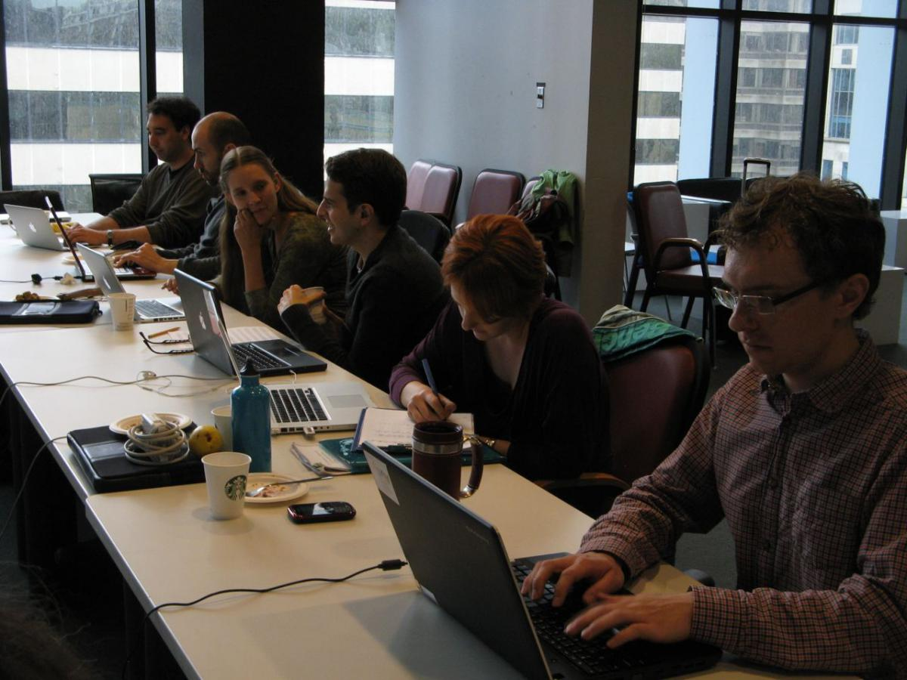
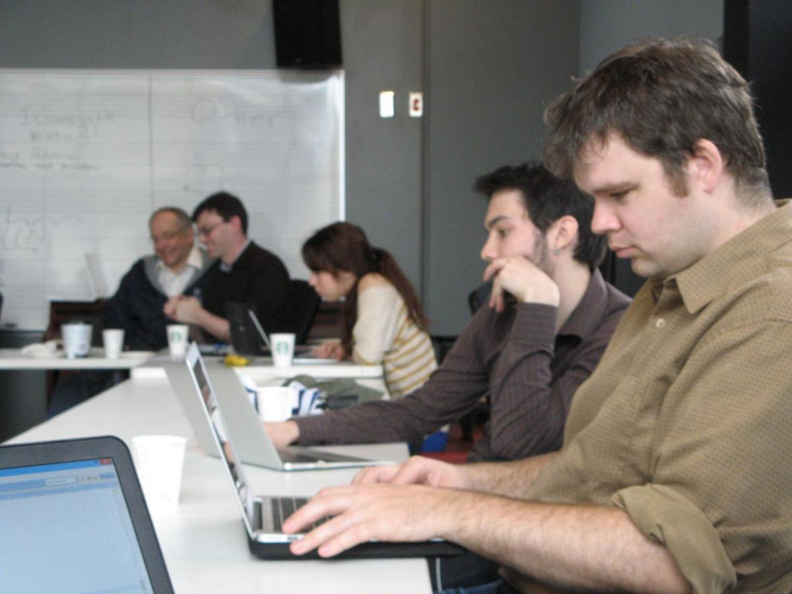
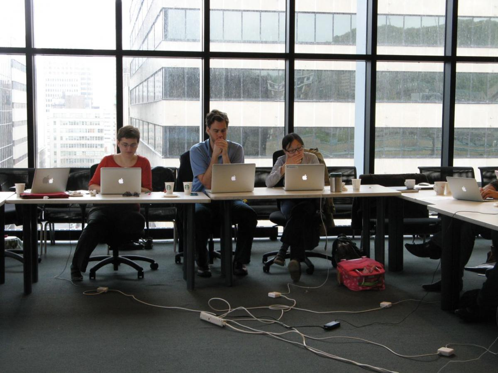
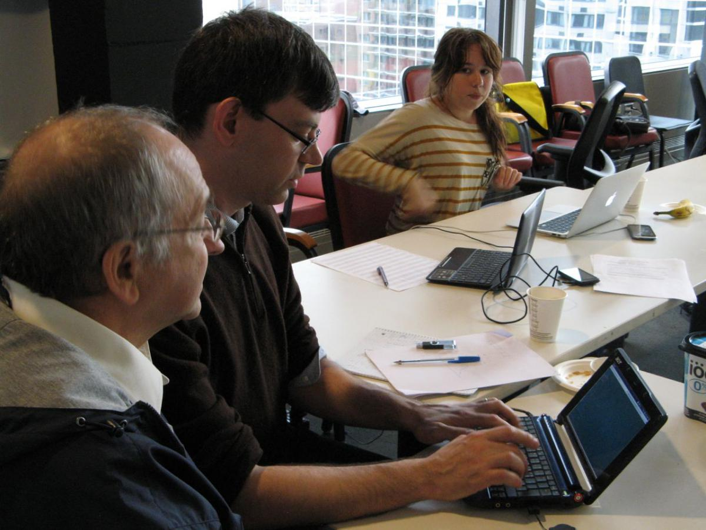
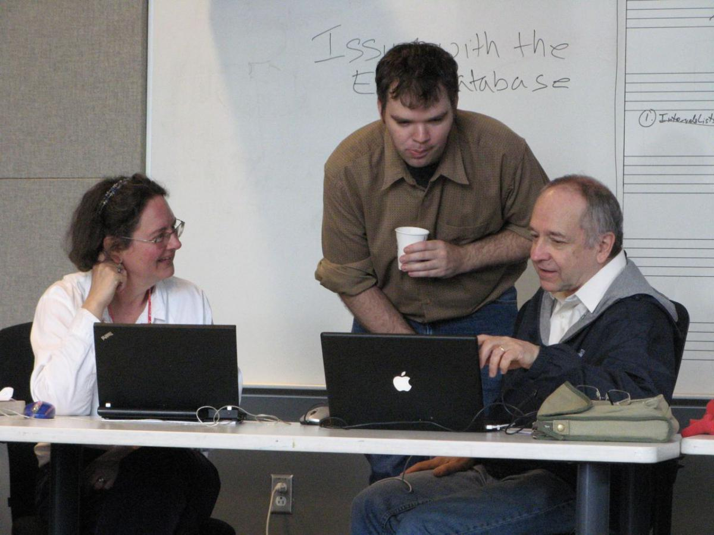
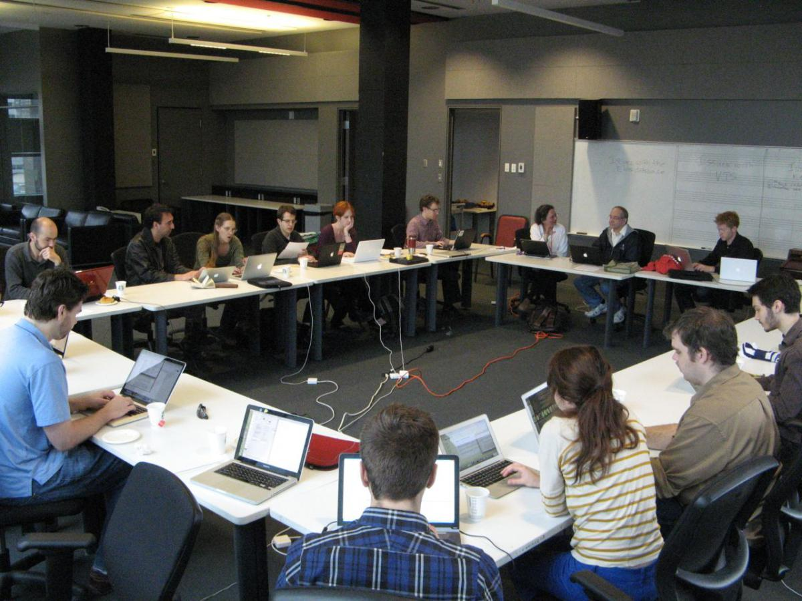
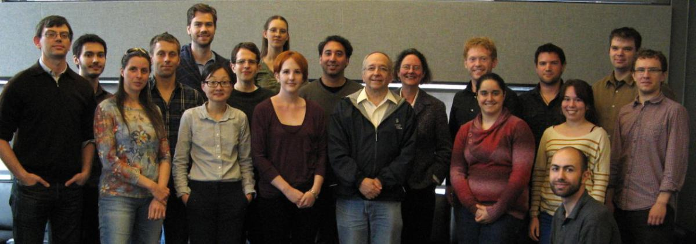
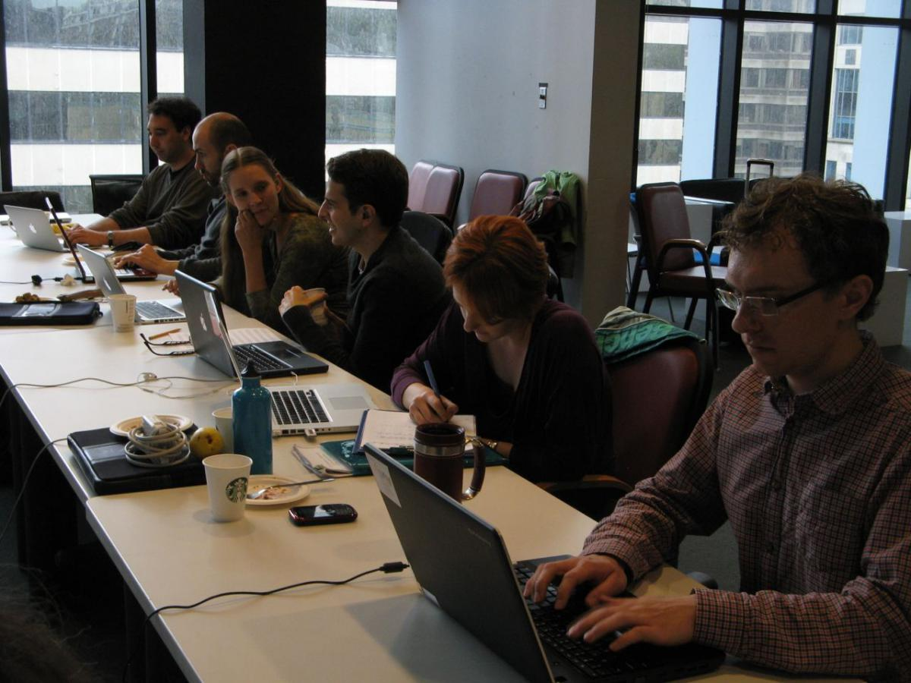
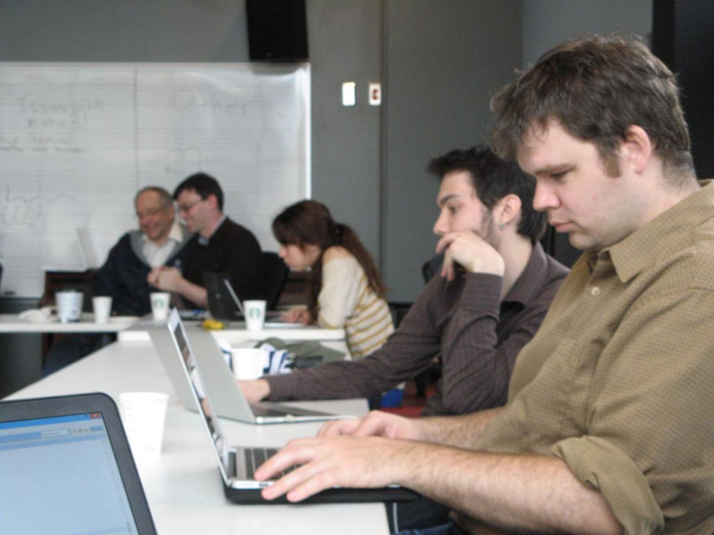
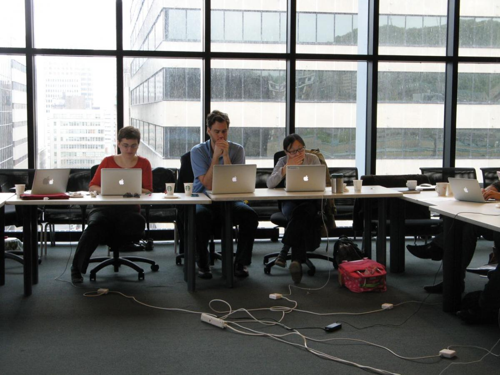
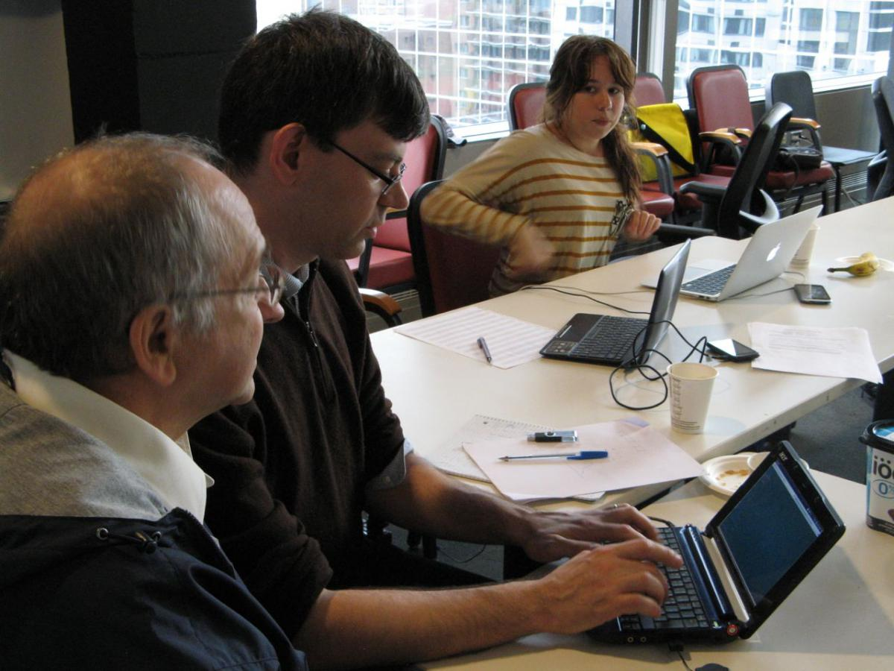
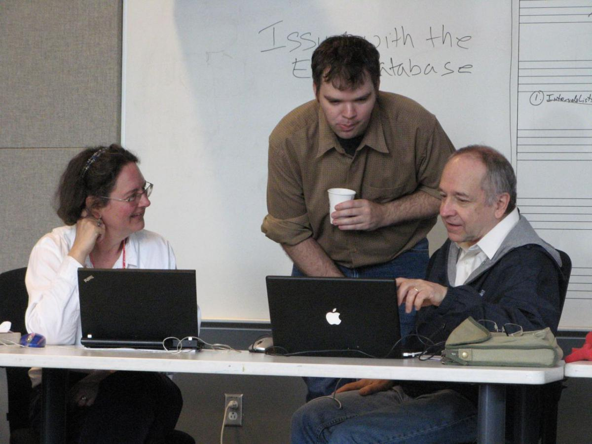
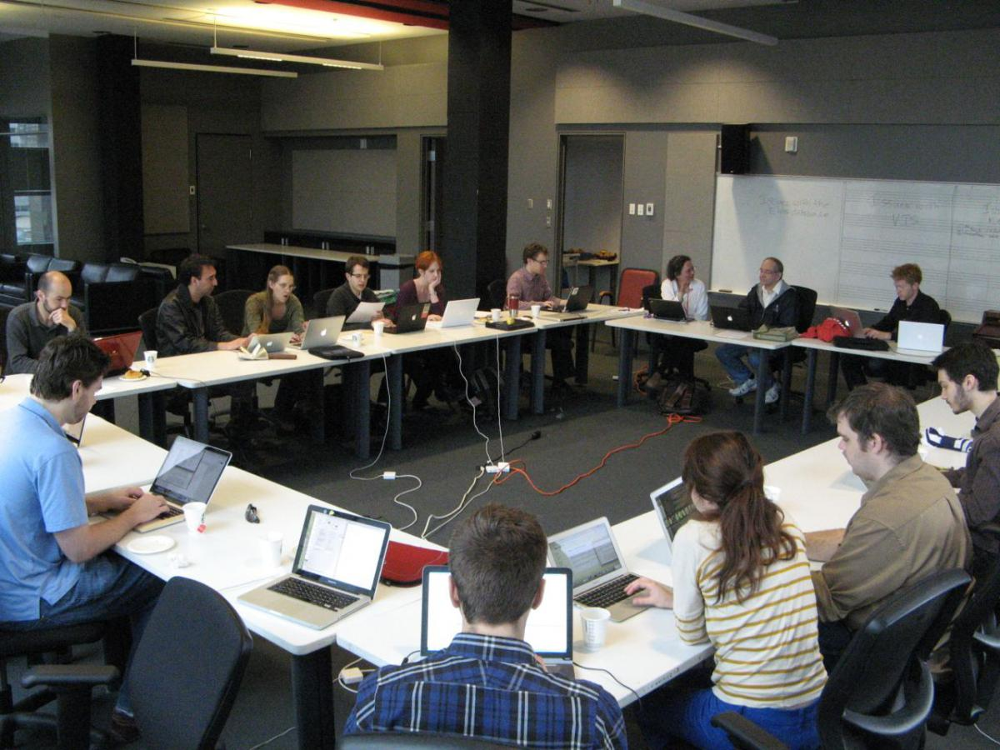
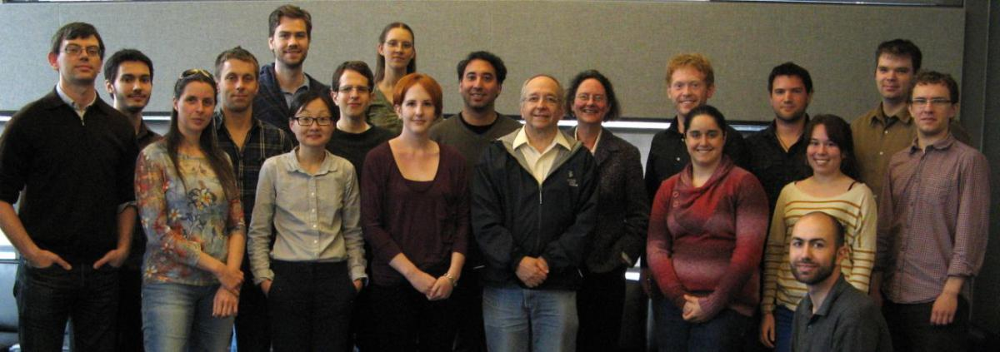
Left to right: Ian Knopke, Jamie Klassen, Frauke Jürgensen, Kirill Zikanov, Ryan Groves, René Rusch, Jacob Sagrans, Jane Hatter, Natasha Dillabough, Myke Cuthbert, Peter Schubert, Julie Cumming, Chris Whyte, Catheirne Motuz, Mark Vandendool, Andrew Morgan (seated), Morgane Ciot, Andrew Hankinson, Christopher Antila.